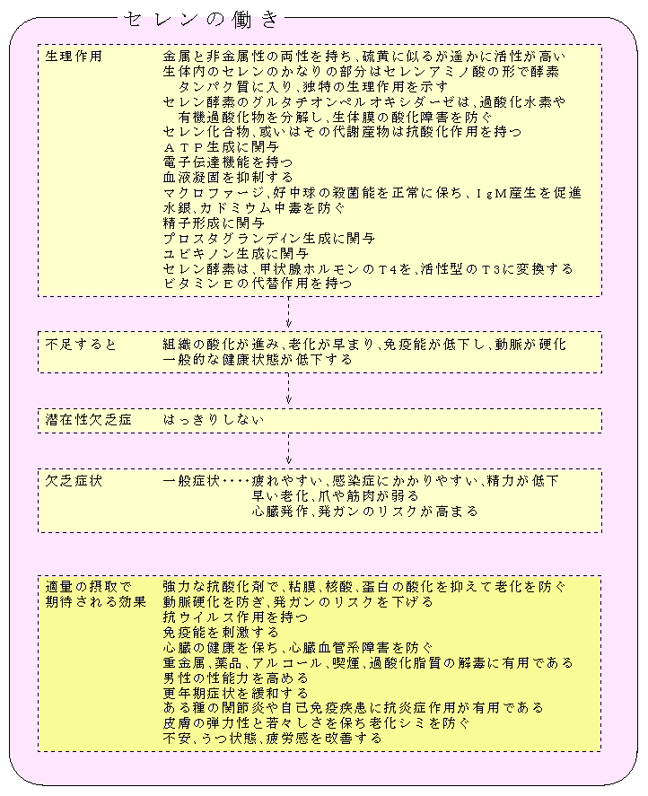

私たちが呼吸する酸素の１〜３％が活性酸素（フリーラジカルと同じ意味）に転換すると言われます．
最初に生成するのはスーパーオキシドで、これが体内で生成するのは
細胞の中のミトコンドリアでエネルギーを作り出す時
白血球の好中球やマクロファージが体内に侵入した細菌などを攻撃する時に殺菌剤として作り
血流が一時的に途絶え再び流れ始めた時
空気中の汚染物質、タバコの煙、アルコールを含むある種の化学薬品、食品添加物、残留農薬の解毒の時
ストレス時に、また、放射線や日光の紫外線を浴びることによっても発生します.
しかし、体内には効率的に活性酸素を除去するシステムが備わり、傷害から免れていますが、 活性酸素の傷害性レベルが、慢性的に抗酸化剤による防御レベルより高ければ、組織への障害が現れ ガンは結果として生じることになります．
活性酸素の除去に関わる酵素は、スーパーオキシドジスムターゼ（ＳＯＤ）やグルタチオンペルオキシダーゼ（ＧＰＸ）やカタラーゼですが、
これらの活性酸素除去剤（スカベンジャー）はそれぞれ役割があります．
最初に生成するスーパーオキシドを転換するスカベンジャーが、ＳＯＤという酵素で、絶えず体内で生合成されて、全身の細胞の内外に存在しています．
ＳＯＤは、スーパーオキシドが発生すると、瞬時に触媒として働いて、過酸化水素に転換させてしまいます．
過酸化水素は ＧＰＸやカタラーゼ（ミトコンドリアでは）が作用して酸素と水に分解します．
スパーオキシドや過酸化水素が転換されず、たまたま遊離の鉄（銅）イオンが存在すると、反応してヒドロキシラジカルと言う極めて活性（傷害性）の強い活性酸素に変換します．
ヒドロキシラジカルはそばに存在する組織、蛋白質、酵素、細胞膜、遺伝子などと反応して瞬時に消滅しますが、反応によって、遺伝子が障害を受ければ、変異細胞からガン細胞へと移行する可能性があり、細胞や組織の機能が傷害されれば、老化病に移行するリスクが高まります．
スーパーオキシド、過酸化水素或いは鉄イオンを野放しにしておくと、ヒドロキシルラジカルが次々と発生してくるわけです．
ヒドロキシルラジカルの発生を未然に防ぐには、ＳＯＤとＧＰＸがチームを組んで常に待機している必要があります．
スーパーオキシドはＳＯＤが存在しなくても、自身が反応して５秒ほどで過酸化水素に変化するとされています（鉄イオンに会わなければ良い）、そのため過酸化水素を消去するＧＰＸが、結局、活性酸素除去の重要なポイントだと思われます．
ＧＰＸはセレンを含んだ蛋白質ですから、セレンが活性酸素除去のキーミネラルと言えるわけです．
セレンとアミノ酸のグルタチオンが体内にたくさんあれば、ＧＰＸは次々と生産され、発生した過酸化水素に作用して無害な水と酸素分子に転換していきます．
ＧＰＸはさらに大切な働きをしています．
仮にヒドロキシラジカルに細胞膜が酸化されると、連鎖反応を起こして過酸化脂質が溜まり、細胞機能を損ない臓器の障害が誘導されるかもしれません．
ビタミンＥ、Ｃ、ＣｏＱなどがこの連鎖反応を止める働きをし、生成した過酸化脂質はＧＰＸが無害な分子に変換するとされます．